電腦版
１．依下圖方式點選「加到桌面」。
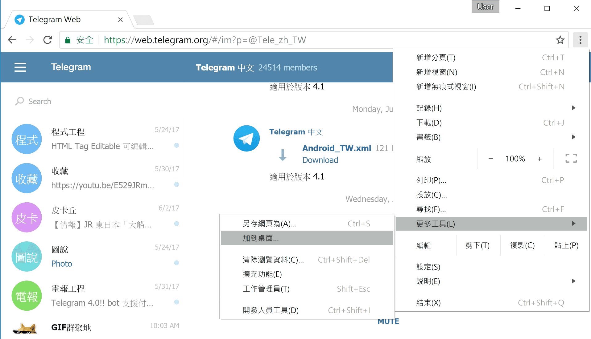
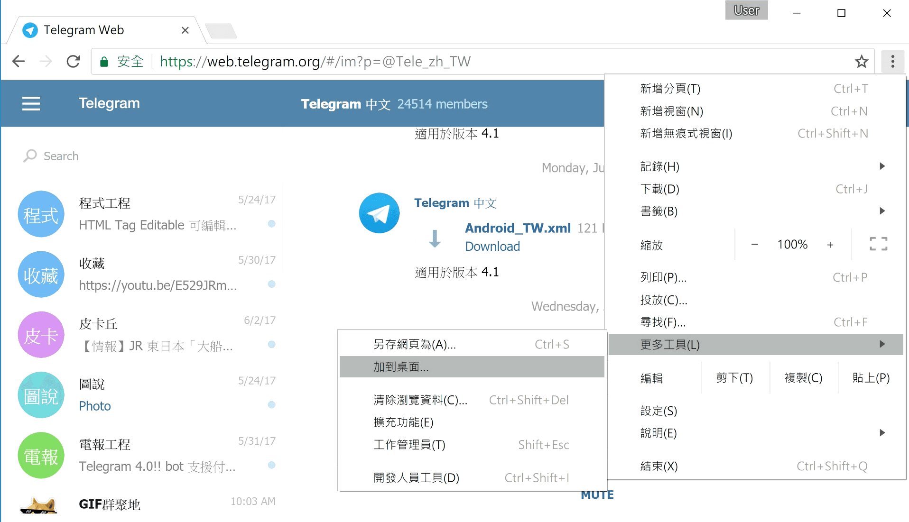
２．勾選「在視窗開啟」， 然後點選「新增」就完成安裝囉。
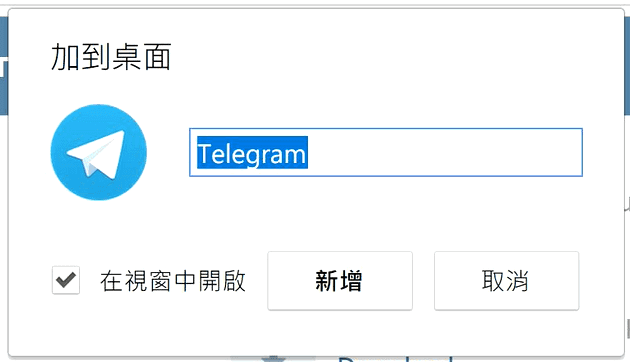
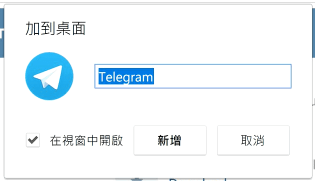
３．恭喜你完成安裝。
回到桌面是否發現了我們的啟動快捷鍵呢？ 趕快來用看看吧！
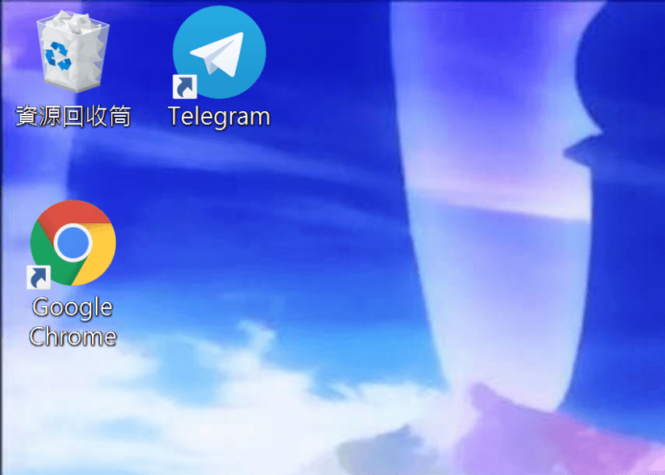
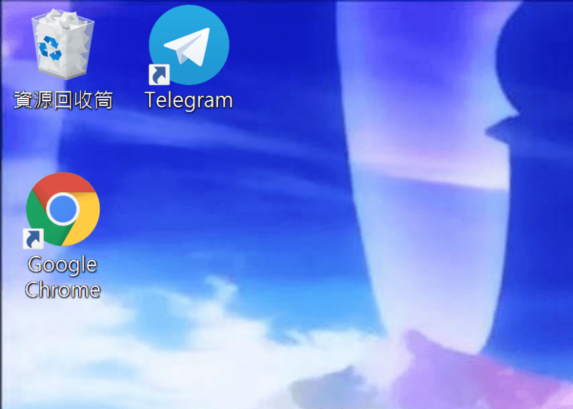
手機版
１．如果是第一次拜訪我們， 瀏覽器會主動把訊息提供給你，
直接點選「新增」完成安裝。
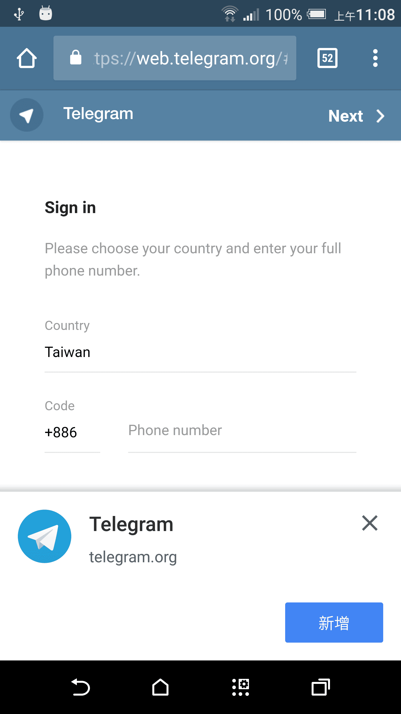
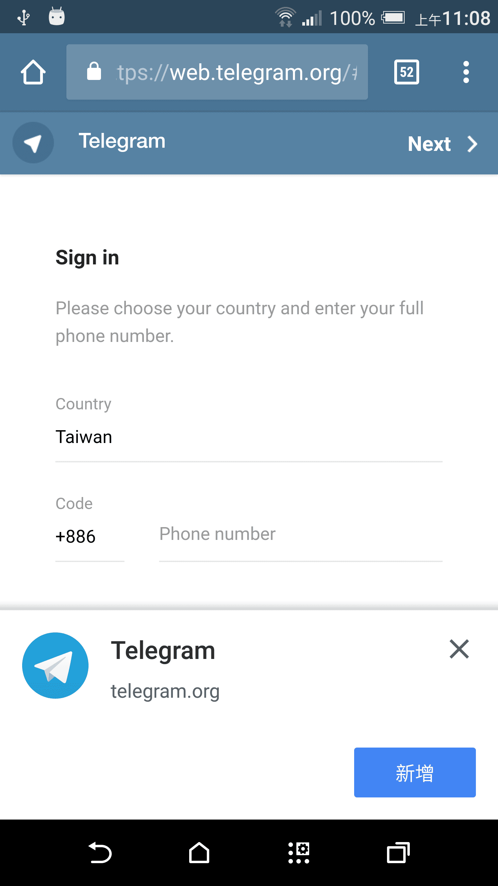
２．如果瀏覽器沒有提示， 也能透過手動安裝，
依下圖方式點選「加到主畫面」。
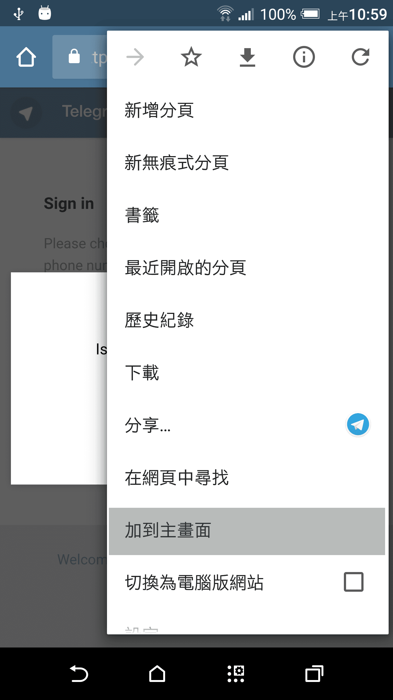
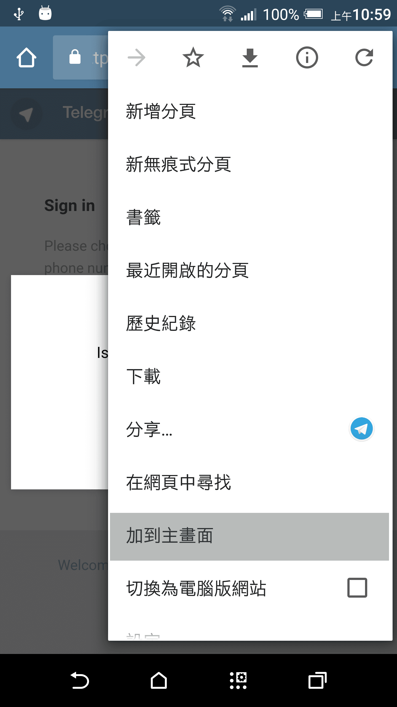
３．點選「新增」就完成安裝囉。
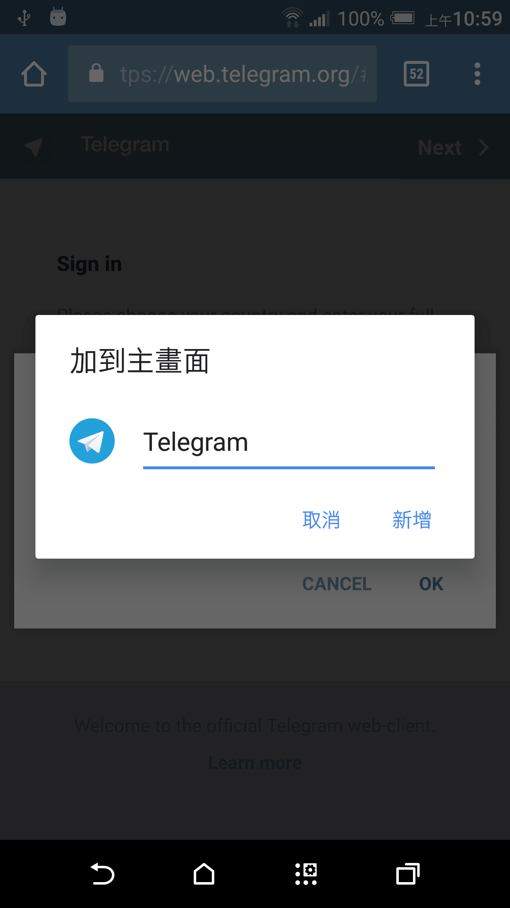
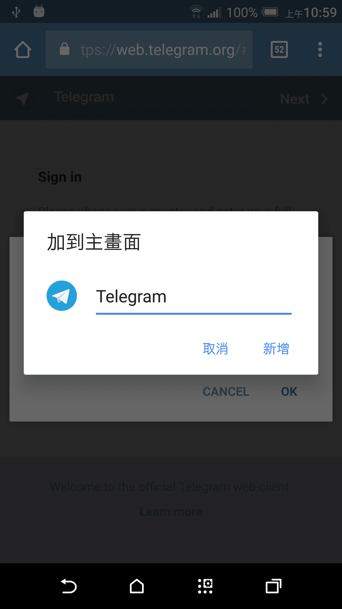
４．恭喜你完成安裝。
回到主畫面是否發現了我們的啟動快捷鍵呢？ 趕快來用看看吧！
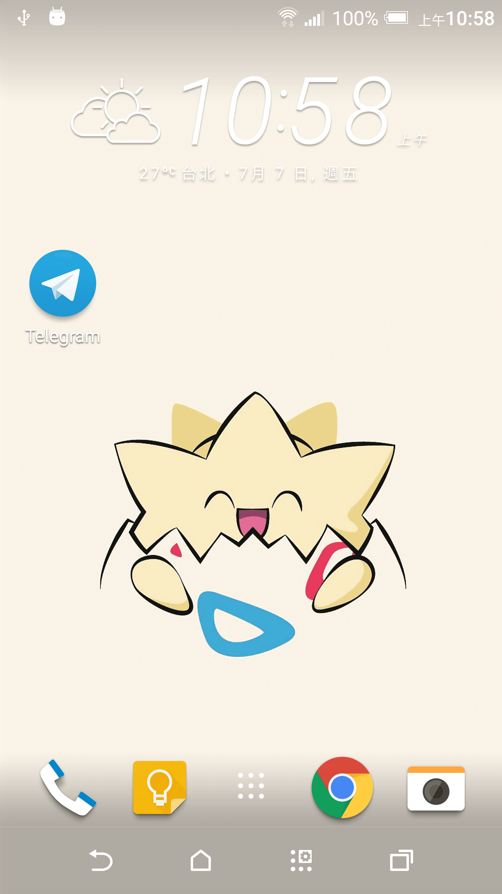
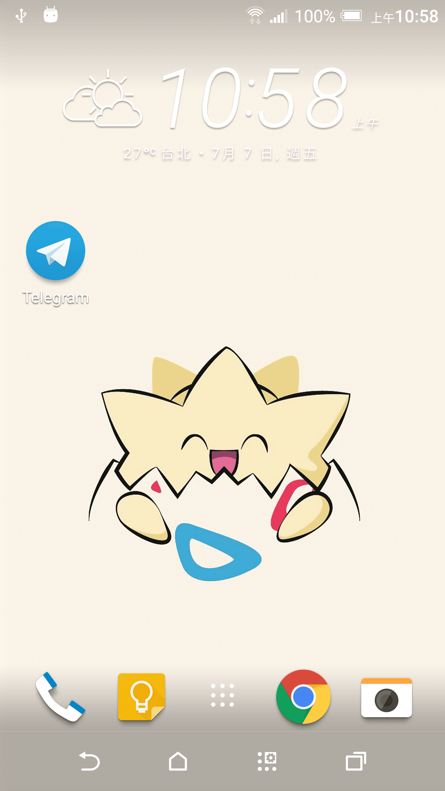